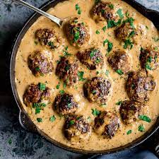

Swedish Meatballs

Description
Meatballs cooked in a savory cream sauce that are usually paired with pasta or mashed potatoes.
Ingredients:
- 2lbs premade meatballs (can also be made from scratch)
- 2 Tbsp olive oil
- 1/4 C. butter
- 2 Tbsp flour
- 2 C. beef broth
- 1 Tbsp garlic (minced)
- 1 C. heavy cream
- 1 tsp Worcestershire sauce
- salt (to taste)
- pepper (to taste)
Steps:
- Bake meatballs in oven according to directions on the package.
- In a pan melt butter on medium heat until bubbly then add flour and whisk until light brown.
- Add garlic and cook for additional 1-2 minutes.
- Add beef broth slowly while whisking until everthing is mixed together.
- Slowly add in heavy cream while whisking until sauce starts to thicken.
- Add Worcestershire sauce, salt, and pepper.
- Combine cooked meatballs with cream sauce.
- Optional: enjoy your meatballs on top of some egg noodles or mashed potatoes.